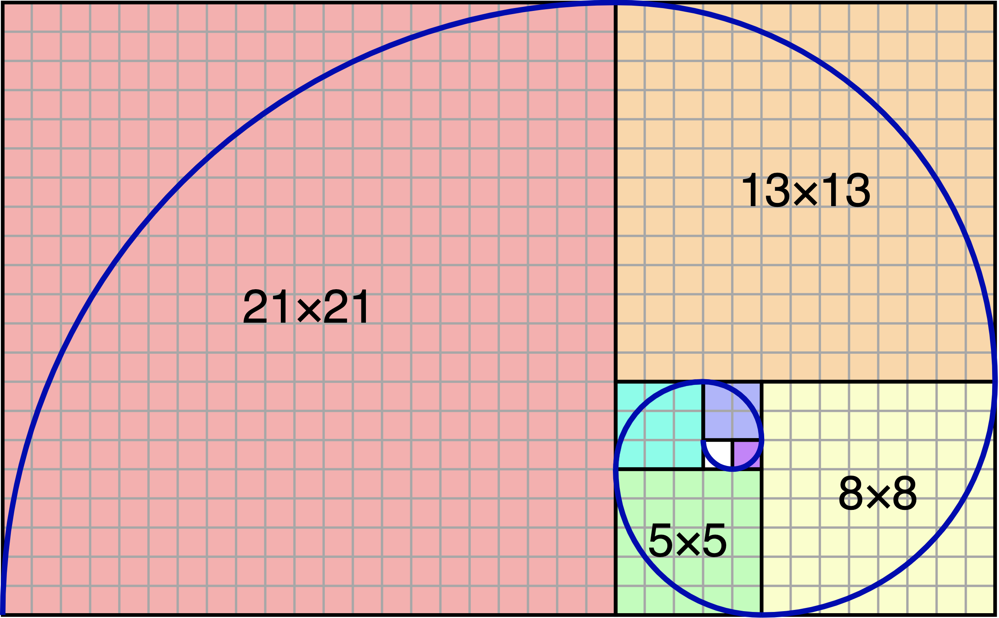

Click “Show answer” button after a question to see the solution.
If a question does not have solution, it means that solution can be easily obtained by running code in Thonny.
Write a function remove_duplicates that takes a string s as argument and returns a new string where duplicate letters are removed. The order of letters should remain the same.
- “banana” → “ban”
- “background” → “background”
1def remove_duplicates(s: str) -> str:2 # write function here
Now, write a function count_common_letters that takes two strings as arguments, s1 and s2, and returns how many letters the two strings have in common. Examples:
1def count_common_letters(s1: str, s2: str) -> int:2 # Write function here345print(count_common_letters("banana", "cat")) # 167print(count_common_letters("Silent", "listen")) # 6
The function should be ignore case i.e should consider upper and lower case letters to be the same.
The weight a person can lift depends on their muscle mass:
Batman currently weighs of brain of fat of muscle). (no bones?!).
If he starts training very hard, he will be able to increase his muscle mass by everyday, and reduce his fat by everyday. When will he be able to benchpress his own weight?
Write a program benchpress.py that prints how many days of training Batman will need.
1brain = 30 # brain mass in kg2fat = 30 # fat mass in kg3muscle = 20 # muscle mass in kg45# write code here
Suggested approach:
- Write a while loop that simulates what will happen to Batman as he trains
- Update the value of the variables at each turn of the loop
- Ask yourself when the loop should stop, and write the stopping condition of the loop
- Finally (outside the loop), print out the result
For fun: If a genetic mutation caused Batman to have a maximum lift of only
,
how much training would he need?
Write a program guessting_game.py. that generates a random integer secret between and and asks the user to guess the secret number.
The program should print if the guess was too low, too high, or correct.
If guess was incorrect, the program should continue asking for another guess, until user’s guess is correct.
Finally, displays how many tries were needed to guess the number.
Please enter your guess: 45 Too low! Guess again: 60 Too high! Guess again: 50 Too low! Guess again: 55 Too high! Guess again: 53 Too low! Guess again: 54 You got it! # of Attempts: 6
A palindrome is a string that reads the same backward as forward e.g. “kayak” and “racecar”.
Write a function (using for loop) that takes a string as input and returns True whether the string is a palindrome, otherwise False.
You must not create another string i.e you are not allowed to reverse the argument string and compare the strings.
Hint: you can do this with an extra index variable that goes from right to left, as the for loop goes from left to right.
1def is_palindrome(s: str) -> str:2 # write function here
Now, change the function to use while loop only, for loop and if statement are not allowed. (You can use if statement at the end of program just to print palindrome and not palindrome.)
Modify is_prime function below to return the smallest divisor of num (excluding as divisor). If num is prime, return num itself.
1def is_prime(num: int) -> bool:2 if num < 2:3 return False45 for i in range(2, num):6 if num % i == 0:7 return False89 return True
Examples:
1def smallest_divisor(num: int) -> int:2 # Write function here345print(smallest_divisor(5)) # 56print(smallest_divisor(15)) # 3
Modify smallest_divisor function above to create a function largest_divisor that returns the largest divisor of num (excluding as divisor). If num is prime, return num itself. Examples:
1def largest_divisor(num: int) -> int:2 # Write function here345print(largest_divisor(5)) # 56print(largest_divisor(15)) # 5
Write a function multiplication_table that takes two integers start and end. The function prints a multiplication table, where each row contains columns for multiples of a number i where start <= i <= end. For example,
>>> multiplication_table(20, 25) 20 40 60 80 100 120 140 160 180 200 21 42 63 84 105 126 147 168 189 210 22 44 66 88 110 132 154 176 198 220 23 46 69 92 115 138 161 184 207 230 24 48 72 96 120 144 168 192 216 240 25 50 75 100 125 150 175 200 225 250
>>> multiplication_table(33, 37) 33 66 99 132 165 198 231 264 297 330 34 68 102 136 170 204 238 272 306 340 35 70 105 140 175 210 245 280 315 350 36 72 108 144 180 216 252 288 324 360 37 74 111 148 185 222 259 296 333 370
The Fibonacci sequence is given by
where .
1a = 12b = 134for i in range(14):5 print(a, end=" ")6 next_term = a + b7 a = b8 b = next_term
A turtle method circle(radius, angle), draws an arc of a circle with size given by the radius and angle. Use the method to draw a Fibonacci Spiral:
